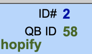

QuickBooks Integration
Manually Link FrameReady Contacts to Existing Quickbooks Customers
It is possible that due to a simple error in case or added spaces (characters), you may find a FrameReady contact is not linked to a QuickBooks Customer as it should during the import process. There are two main methods that you can use to manually link your FrameReady contact with a QuickBooks Customer. Both methods will begin the same way.
-
From the QuickBooks Integration Window, you will need to be on the Customers tab.
-
Search for the QuickBooks Customer that you are looking to sync to a FrameReady contact.
[Should have an image, but FR is busted and hiding the icons!] -
Use the magnifying glass icon and you’ll be moved to a Find View of the Customer Record. Enter in the information you have for the customer and select Perform Find.
-
If the contact is linked to a FrameReady contact, you’ll see the following at the bottom of the record.
[Need a Photo for this.] -
In the case where there is no suggested contact, you can then choose which option will best suit what you are doing.
-
If you know the FrameReady ID, use the Manually By Contact ID field to enter in the FrameReady Contact ID for the matching QuickBooks Customer.
-
If you do not know the FrameReady ID, then you can use the QuickBooks ID and enter that onto the FrameReady Contact Record.

Just under the FrameReady ID, you can select the QB ID and enter in the customer number that you found on the Integration Window.
© 2023 Adatasol, Inc.